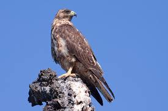
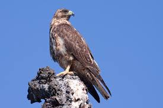

Reserva Biologica Bosque Nuboso Monteverde
Toda la fotografia por / All.photography by © BRETT COLE
Es
Espanol
El Bosque Nuboso
Los bosques nubosos tropicales son ecosistemas de enorme riqueza, albergando el 20% de la diversidad de plantas y un 16% de los vertebrados del planeta en tan solo 0.4% de la superficie de la Tierra. La Reserva Biologica Bosque Nuboso Monteverde es mundialmente reconocida por proteger lo que se ha catalogado como el bosque nuboso mas famoso del mundo, albergando mas de 100 especies de mamiferos, 400 de aves, 120 de anfibios y reptiles, decenas de miles de insectos y 3000 especies de plantas, entre las que destacan la mayor diversidad de orquideas del mundo con alrededor de 500 especies distintas. No obstante, hoy en dia los bosques nubosos corren peligro debido a su gran vulnerabilidad a cambios climaticos y su dependencia en el banco de nubosidad. Por esta razon, resulta vital realizar esfuerzos para salvar este delicado ecosistema
Historia
La Reserva Biologica Bosque Nuboso Monteverde nace en el ano 1972, cuando ante la creciente amenaza de que establecieran asentamientos en el bosque nuboso de los alrededores, el cientifico visitante George Powell y su espoza unieron fuerzas con uno de los primeros colonoizadores cuaqueros, don Wilford Guindon, para promover el establecimiento de una reserva natural. El Centro Cientifico Tropical, una organizacion ambientalsin fines de lucro dedicada al estudio de las relaciones entre el ser humano y la naturaleza, se mostro receptivo a estos esfuerzos y acepto la responsabilidad institucional de la administracion y la posesion de la reserva. Desde entonces, el Centro Cientifico Tropical fue asegurando los recursos financieros y humanos necesarios para expandir,consolidar, proteger y administrar las mas de 4.000 hectareas que actualmenteposee la reserva.
Datos Relevantes
- Existen 878 especies de epifitas en la Reserva.
- El rango de la elevacion va de los 1.840 a los 860 metros sobre el nivel del mar.
- Promedio anual de precipitacion es de 2.579 mm, siendo Octubre el mes mas lluvioso y Marzo el menos lluvioso.
- Temperatura media anual es de 18,8 °C
- Solo el 3% del territorio de la Reserva se usa para Visitacion; el resto esta bajo estricta proteccion
- Elegida como una de las siete maravillas naturales de Costa Rica
En
English
The Cloud Forest
Tropical cloud forests are ecosystems of enormous wealth, housing 20% of the diversity of plants and 16% of the vertebrates of the planet in only 0.4% of the surface of the Earth. The Monteverde Cloud Forest Biological Reserve is worldwide renowned for protecting what has been classified as the cloud forest most famous in the world, housing more than 100 species of mammals, 400 birds, 120 amphibians and reptiles, tens of thousands of insects and 3000 species of plants, among which the greatest diversity stands out of orchids in the world with around 500 different species. No However, today cloud forests are in danger due to their great vulnerability to climatic changes and its dependence on the bank cloudiness. For this reason, it is vital to make efforts to save this delicate ecosystem
History
The Monteverde Cloud Forest Biological Reserve was born in 1972, when faced with the growing threat of them establishing settlements in the surrounding cloud forest, visiting scientist George Powell and his wife joined forces with one of the first Quaker settlers, Don Wilford Guindon, to promote the establishment of a nature reserve. The Tropical Scientific Center, a non-profit environmental organization dedicated to the study of the relationships between human beings and nature, it was shown receptive to these efforts and accept institutional responsibility of the administration and possession of the reserve. Since then, the Centro Cientifico Tropical was ensuring financial resources and humans needed to expand, consolidate, protect and manage the more than 4,000 hectares that the reserve currently has.
Relevant Facts
- There are 878 species of epiphytes in the Reserve.
- The elevation range is from 1,840 to 860 meters above the sea level.
- Average annual rainfall is 2,579 mm, with October being the the rainiest month and March the least rainy.
- Average annual temperature is 18.8 ° C
- Only 3% of the territory of the Reserve is used for Visiting; the rest is under strict protection
- Chosen as one of the seven natural wonders of Costa Rica
 
